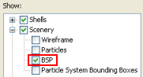
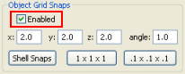

| Key | Action |
|---|---|
Alt |
If at least one object is selected:
Activates the scale gizmo. If the mouse is being dragged: Deselects the items delimited by the area over which the mouse is dragged. |
Ctrl |
If at least one object is selected:
Enables the selection of multiple objects. |
Shift |
If at least one object is selected:
Activates the rotation gizmo. |
Delete |
Deletes selected objects. |
Enter |
Places the selected object under the mouse cursor. |
Esc |
Deselects the selected objects. |
B |
Toggles the drawing of object's BSPs. This value can also be set by the General Options panel's Show list box's Scenery→BSP item.  |
C |
Clones the selected objects. |
R |
If a shell is selected: Recreates the selected shell(s). |
G |
Toggles the snapping of objects to the
grid specified in the Object panel. This value can also be set by the Object Grid Snaps group box's Enabled check box.  |
V |
If a shell is selected:
Makes a copy of the selected shell, and
links both by a matching portal. |
| Mouse left button click |
Selects object. |
| Mouse left button drag |
If Drag On Select check box is
selected:
Moves the selected objects
in the direction of the drag.
Selects all selectable objects
inside the dragged area. |
| Mouse right button click |
If a model, shell, or particle was
clicked: Opens the item's context menu. |
| Mouse middle button click |
If a shell is selected:
Links the selected shell to the clicked
shell by a matching portal.
Makes a copy of the selected shell, and
links both by a matching portal. |
| Mouse scroll wheel |
If Shift is pressed:
Rotates the selected objects by 15 degrees.
Rotates the selected objects by the number
of degrees specified in the Angle
field. |